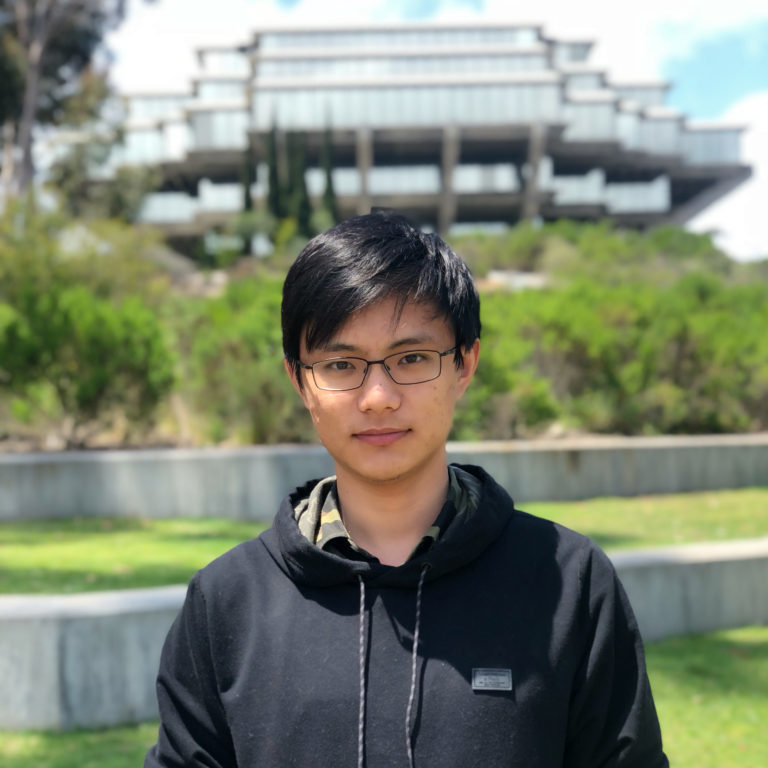
Biography
I am a research scientist at Google, working on Project Starline. Earlier in 2021, I received my Ph.D. in Computer Science (Google Ph.D. Fellow) at University of California, San Diego. My advisor is Prof. Ravi Ramamoorthi. I did my undergraduate in Yao Class, Tsinghua University.
My research interests lie in the combination of inverse rendering and rendering. More specifically, my works focus on practical ways to acquire, model, and manipulate the geometry and material properties, as well as the lightings and the camera views that affect visual appearances. My works include portrait relighting, surface material modeling, hair reconstruction, path guiding, novel view synthesis, etc.
News
- [2024.12] Our paper "Quark: Real-time, High-resolution, and General Neural View Synthesis" got Best Paper Award in SIGGRAPH Asia 2024.
- [2023.6] Our paper "Neural Free-Viewpoint Relighting for Glossy Indirect Illumination" got accepted by EGSR 2023.
- [2021.9] I joined Google as a research scientist!
Publications
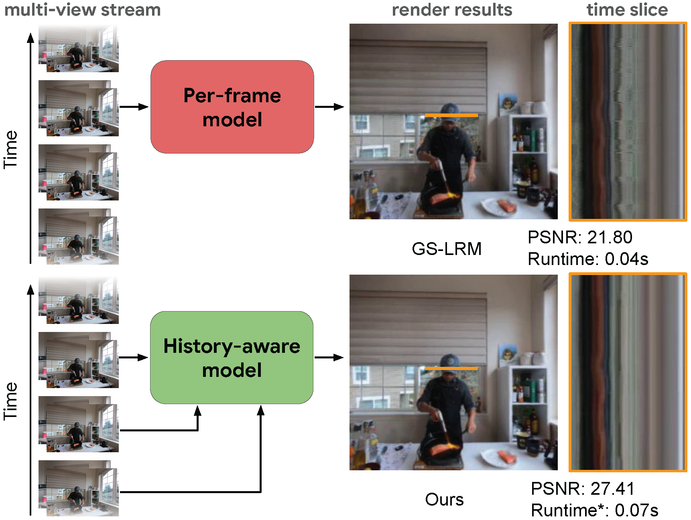
SplatVoxel: History-Aware Novel View Streaming without Temporal Training
Yiming Wang, Lucy Chai, Xuan Luo, Michael Niemeyer, Manuel Lagunas, Stephen Lombardi, Siyu Tang, Tiancheng Sun
Arxiv 2025
We study the problem of Online Novel View Streaming from Sparse-view RGB Videos. We present a Hybrid Splat-Voxel feed-forward scene reconstruction framework. Our system is trained only on static scenes, and can generalize at inference time for zero-shot history-aware 4D novel view streaming. Compared to per-frame reconstruction methods which are prone to temporal flickering artifacts, our history-aware model delivers high visual quality and temporal consistency, running at 15 fps with a 350ms delay on two-view inputs of 320 × 240 resolution.
Quark: Real-time, High-resolution, and General Neural View Synthesis
John Flynn*, Michael Broxton*, Lukas Murmann*, Lucy Chai, Matthew DuVall, Clément Godard, Kathryn Heal, Srinivas Kaza, Stephen Lombardi, Xuan Luo, Supreeth Achar, Kira Prabhu, Tiancheng Sun, Lynn Tsai, Ryan Overbeck
SIGGRAPH Asia 2024
We present a novel neural algorithm for performing high-quality, high-resolution, real-time novel view synthesis. From a sparse set of input RGB images or videos streams, our network both reconstructs the 3D scene and renders novel views at 1080p resolution at 30fps on an NVIDIA A100. Our feed-forward network generalizes across a wide variety of datasets and scenes and produces state-of-the-art quality for a real-time method.
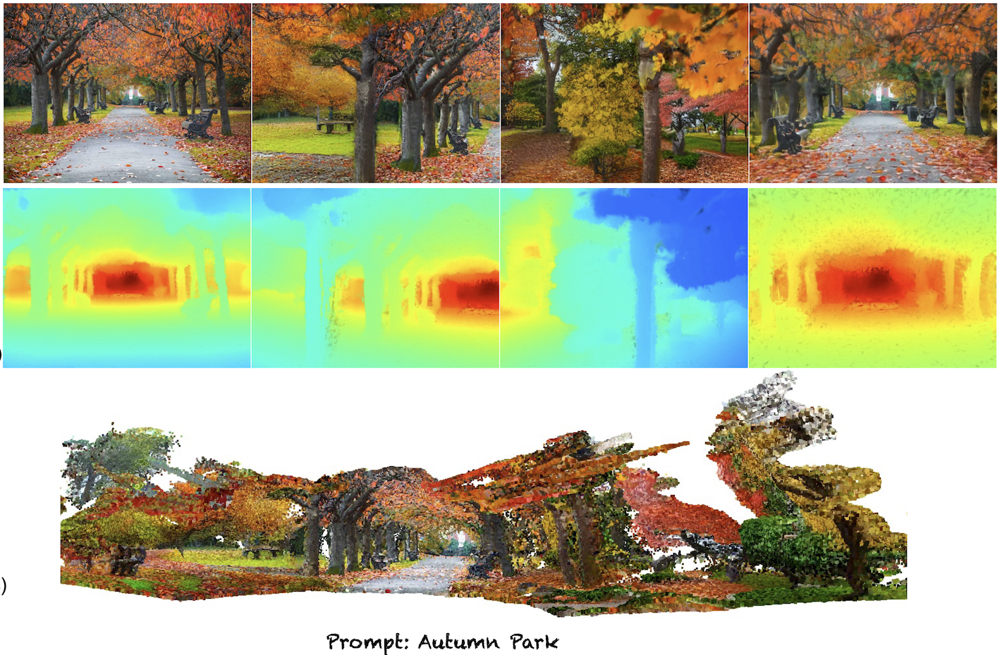
Text2Immersion: Generative Immersive Scene with 3D Gaussians
Hao Ouyang, Stephen Lombardi, Kathryn Heal, Tiancheng Sun
Arxiv 2023
We introduce a novel approach capable of generating consistently immersive, photorealistic 3d scenes from text prompts while maintaining realtime rendering speeds.
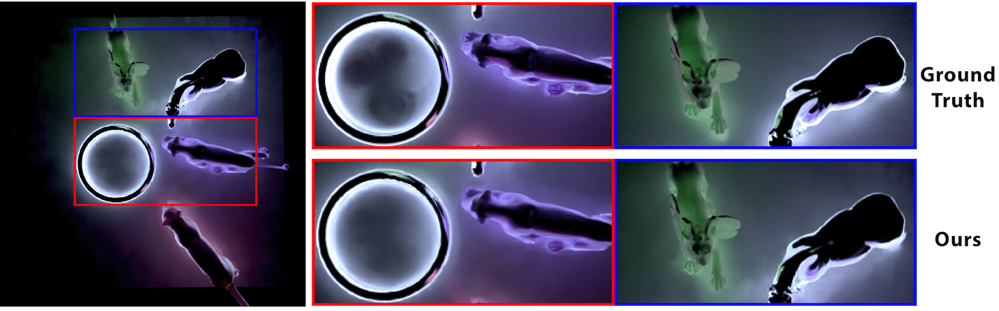
Neural Free-Viewpoint Relighting for Glossy Indirect Illumination
Nithin Raghavan*, Yan Xiao*, Kai-En Lin, Tiancheng Sun, Sai Bi, Zexiang Xu, Tzu-Mao Li, Ravi Ramamoorthi
EGSR 2023
We demonstrate a hybrid neural-wavelet PRT solution to high-frequency indirect illumination, including glossy reflection, for relighting with changing view. Our method is able to generalize complex global illumination effects under novel view and lighting conditions.
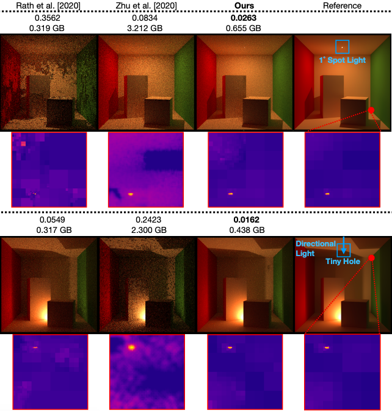
Hierarchical Neural Reconstruction for Path Guiding Using Hybrid Path and Photon Samples
Shilin Zhu, Zexiang Xu, Tiancheng Sun, Alexandr Kuznetsov, Mark Meyer, Henrik Wann Jensen, Hao Su, Ravi Ramamoorthi
SIGGRAPH 2021
We present a hierarchical neural path guiding framework which uses both path and photon samples to reconstruct high-quality sampling distributions. Uniquely, we design a neural network to directly operate on a sparse quadtree, which regresses a high-quality hierarchical sampling distribution. Our novel hierarchical framework enables more fine-grained directional sampling with less memory usage, effectively advancing the practicality and efficiency.
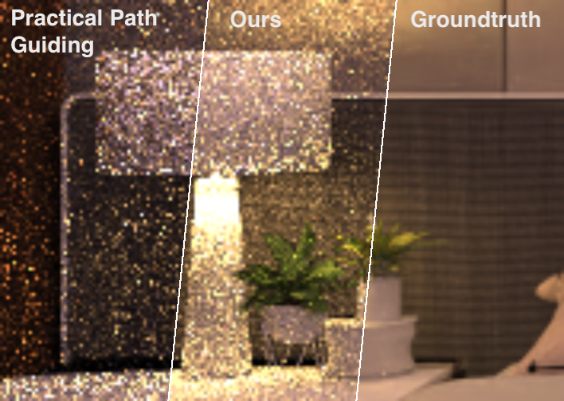
Photon-Driven Neural Reconstruction for Path Guiding
Shilin Zhu, Zexiang Xu, Tiancheng Sun, Alexandr Kuznetsov, Mark Meyer, Henrik Wann Jensen, Hao Su, Ravi Ramamoorthi
ACM Transactions on Graphics 2022
We present a novel neural path guiding approach that can reconstruct high-quality sampling distributions for path guiding from a sparse set of samples, using an offline trained neural network. We leverage photons traced from light sources as the primary input for sampling density reconstruction, which is effective for challenging scenes with strong global illumination.
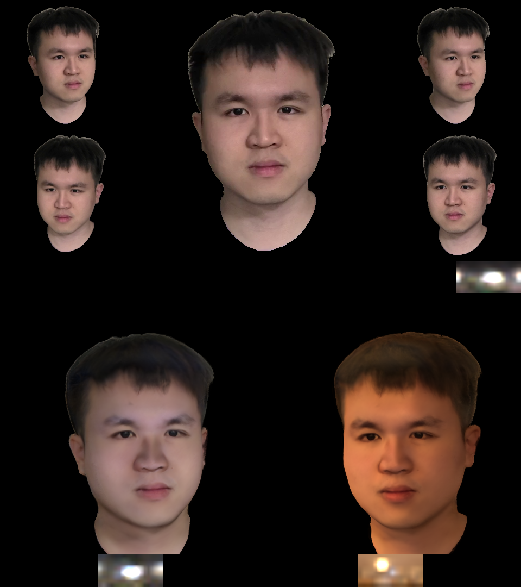
NeLF: Neural Light-Transport Field for Portrait View Synthesis and Relighting
Tiancheng Sun*, Kai-En Lin*, Sai Bi, Zexiang Xu, Ravi Ramamoorthi
Eurographics Symposium on Rendering 2021
We present a system for portrait view synthesis and relighting: given multiple portraits, we use a neural network to predict the light-transport field in 3D space, and from the predicted Neural Light-transport Field (NeLF) produce a portrait from a new camera view under a new environmental lighting.
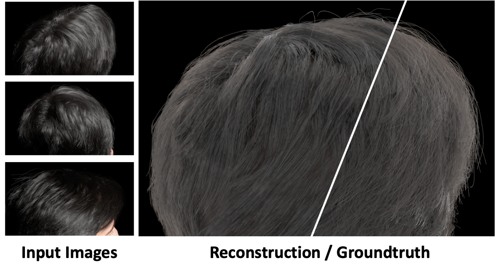
Human Hair Inverse Rendering using Multi-View Photometric Data
Tiancheng Sun, Giljoo Nam, Carlos Aliaga, Christophe Hery, Ravi Ramamoorthi
Eurographics Symposium on Rendering 2021
We introduce a hair inverse rendering framework to reconstruct high-fidelity 3D geometry of human hair, as well as its reflectance,which can be readily used for photorealistic rendering of hair. We demonstrate the accuracy and efficiency of our method using photorealistic synthetichair rendering data.
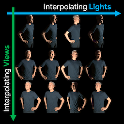
Neural Light Transport for Relighting and View Synthesis
Xiuming Zhang, Sean Fanello, Yun-Ta Tsai, Tiancheng Sun, Tianfan Xue, Rohit Pandey, Sergio Orts-Escolano, Philip Davidson, Christoph Rhemann, Paul Debevec, Jonathan T. Barron, Ravi Ramamoorthi, William T. Freeman
ACM Transactions on Graphics 2021
We captured full human bodies with multiple lights and cameras on a light stage, and used a convolutional neural network to predict the texture atlas of known geometric properties, which enables relighting and view synthesis.
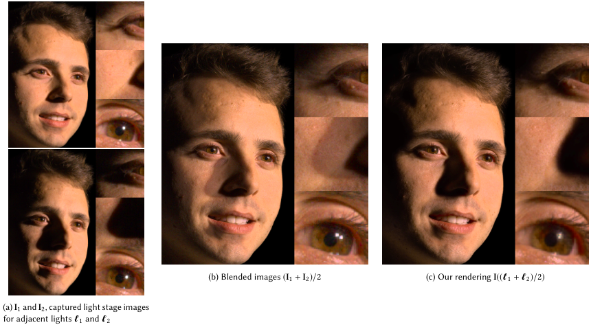
Light stage super-resolution: continuous high-frequency relighting
Tiancheng Sun, Zexiang Xu, Xiuming Zhang, Sean Fanello, Christoph Rhemann, Paul Debevec, Yun-Ta Tsai, Jonathan T. Barron, Ravi Ramamoorthi
SIGGRAPH Asia 2020
We use a neural network to super-resolve the lights on the light stage, which enables arbitrary point light relighting on human faces under the light stage.
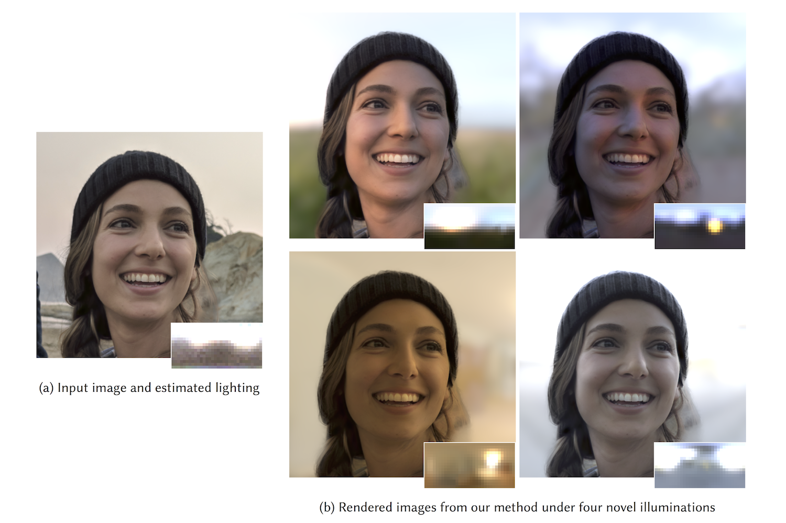
Single Image Portrait Relighting
Tiancheng Sun, Jonathan T. Barron, Yun-Ta Tsai, Zexiang Xu, Xueming Yu, Graham Fyffe, Christoph Rhemann, Jay Busch, Paul Debevec, Ravi Ramamoorthi
SIGGRAPH 2019
Media coverage, Pixel 5 ''Portrait Light''
We present a system for portrait relighting: a neural network that takes as input a single RGB image of a portrait taken with a standard cellphone camera in an unconstrained environment, and from that image produces a relit image of that subject as though it were illuminated according to any provided environment map.
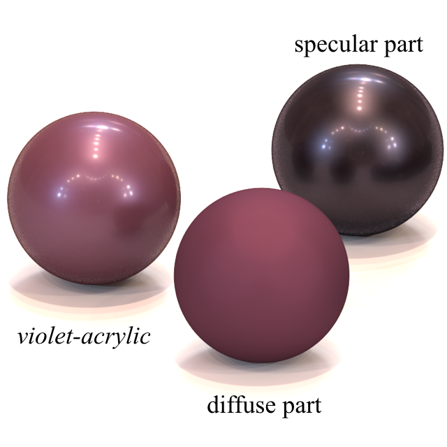
Connecting Measured BRDFs to Analytic BRDFs by Data-Driven Diffuse-Specular Separation
Tiancheng Sun, Henrik Wann Jensen, Ravi Ramamoorthi
SIGGRAPH Asia 2018
We propose a novel framework for connecting measured and analytic BRDFs, by separating a measured BRDF into diffuse and specular components. This enables measured BRDF editing, a compact measured BRDF model, and insights in relating measured and analytic BRDFs. We also design a robust analytic fitting algorithm for two-lobe materials.
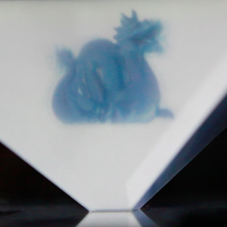
Three-dimensional Display via Multi-layer Translucencies
Tiancheng Sun, Huarong Gu
International Symposium on Optoelectronic Technology and Application 2018
We built a display system using light field display and pyramid-like mirror. The displayed allows the observer to see the virtual 3D objects from different directions in the air.
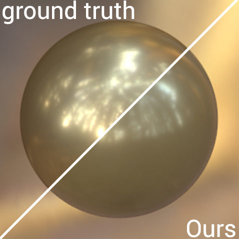
Attribute‐preserving gamut mapping of measured BRDFs
Tiancheng Sun, Ana Serrano, Diego Gutierrez, Belen Masia
28th Eurographics Symposium on Rendering (EGSR 2017)
1st place at the 2018 ACM Student Research Competition (undergraduate category) ACM annoucement, ACM news, UCSD news
1st place at the SIGGRAPH 2017 ACM Student Research Competition (undergraduate category) SIGGRAPH annoucement, SIGGRAPH blog post, UCSD news
We proposed a new BRDF gamut mapping algorithm using two-step optimization. We optimize the luminance with the guide of perceptual attributes in the first step, and optimize the ink coefficients using image comparison in the second step.
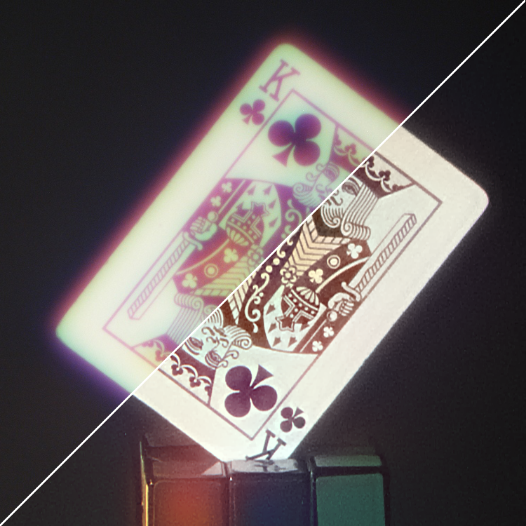
Revisiting Cross-channel Information Transfer for Chromatic Aberration Correction
Tiancheng Sun, Yifan (Evan) Peng, Wolfgang Heidrich
2017 IEEE International Conference on Computer Vision (ICCV)
By modelling the similarity between different channels, we propose a new blind image deconvolution algorithm which transfers information from clear channel to blurry ones, and yield better results than state-of-the-art methods in both refractive and diffractive optical systems.
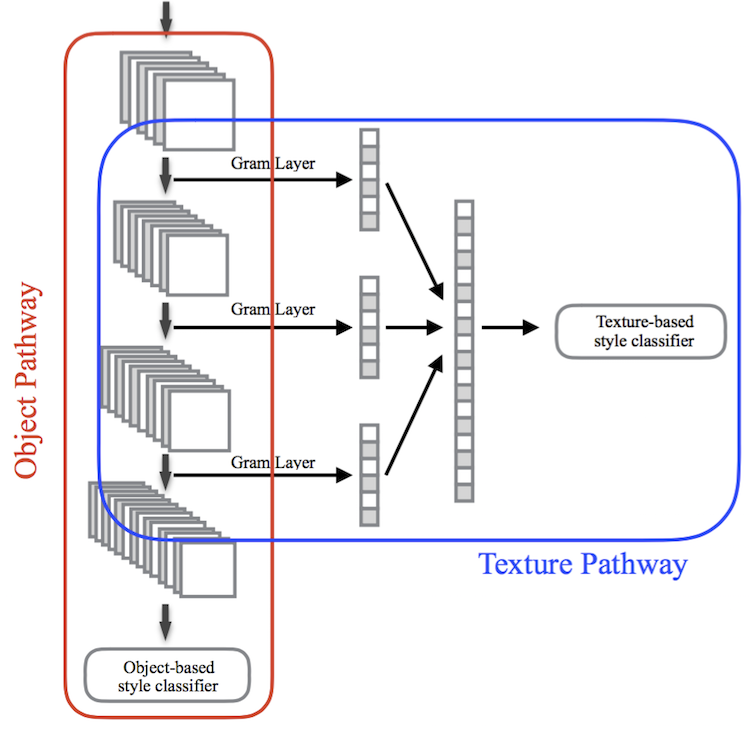
Convolution Neural Networks with Two Pathways for Image Style Recognition
Tiancheng Sun, Yulong Wang, Jian Yang, and Xiaolin Hu
IEEE Transactions on Image Processing (Volume: 26, Issue: 9, Sept. 2017)
We add the ideas used in image style transfer into traditional CNN network for image style recognition, and achieve state-of-the-art results on three benchmark datasets.
Experience
Research intern @ Facebook 2020.6 - 2020.11
Graphics research at Facebook Reality Lab with Christophe Hery and Carlos Aliaga: we developed a hair inverse rendering system that can infer the geometry and the reflectance of hair strands using images from multiple cameras under different lights.
Research intern @ Google 2019.6 - 2019.9
Computational photography research at Google Research with Jonathan Barron and Graham Fyffe: we super-resolved the light resolution on the light stage so that we could relight portraits under high-frequency lightings.
Software engineering intern @ Google 2018.6 - 2018.9
Computational photography research at Google Research with Yun-Ta Tsai and Jonathan Barron: we developed a relighting system that can change the lighting on a portrait under natural illumination.
Research assistant @ Tsinghua University 2017.2 - 2017.6
Computational display research at State Key Laboratory of Precision Measurement Technology and Instruments with Professor Huarong Gu: we built a 3d volumetric display used light field display and pellicle pyramid.
Research intern @ Universidad de Zaragoza 2016.7 - 2016.10
Computer graphic research at Graphics and Imaging Lab with Professor Diego Gutierrez and Belen Masia: we proposed a new framework for material appearance evaluation, and implemented material editing applications with user-friendlier interface and higher editing capability.
Research intern @ King Abdullah University of Science and Technology 2016.2 - 2016.6
Computational imaging research at Visual Computing Center with Professor Wolfgang Heidrich: we worked on a new approach for image deconvolution, and yielded state-of-the-art results in different optical systems.
Research assistant @ Tsinghua University 2015.12 - 2016.2
Neural network research at State Key Laboratory of Intelligent Technology and Systems with Professor Xiaolin Hu: we proposed a new neural network structure and its corresponding training procedure for image style recognition.
Executive council member @ Tsinghua Spark Program 2015.9 - 2017.6
Organize and plan activities such as Spark Talks and Industrial Field Trips in the program.
Technical leader @ Phantouch Technology 2015.9 - 2015.12
Led a developing group for pose detection on virtual-reality devices.
Research intern @ Megvii Inc. 2015.4 - 2015.9
Computational vision research with Haoqiang Fan: we built a 3d model scanner for human faces based on phase-shift technique.